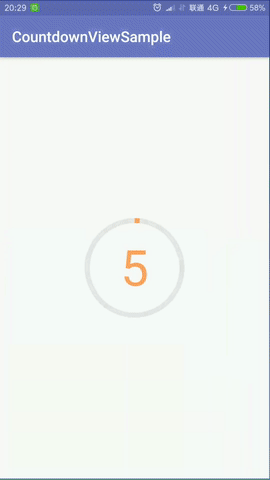

这是新项目中用到的一个倒计时控件，可以通过addView(…)添加到任意布局中。计时长短可调；各种颜色、尺寸可调；可以传入一个监听器，当计时结束时会得到通知。
效果：

基本用法：
1
2
3
4
5
6
7
8
9
10
11
|
FrameLayout fl_container = findViewById(R.id.fl_container);
//第2个参数为倒计时时长
CountdownView countdownView = new CountdownView(this, 5, new CountdownView.Listener() {
@Override
public void onFinished() {
Toast.makeText(MainActivity.this, "计时结束", Toast.LENGTH_SHORT).show();
}
});
fl_container.addView(countdownView);
|
改变各种参数：
1
2
3
4
5
|
CountdownView countdownView = new CountdownView(this, 20, listener)
.setSize(400, 400)//控件尺寸
.setStrokeWidth(20)//线宽
.setTextsize(200)//文字尺寸
.setColor(backgroundColor, forgroundColor, textColor);//背景色、前景色、文字颜色
|
代码：
https://github.com/al4fun/CountdownView